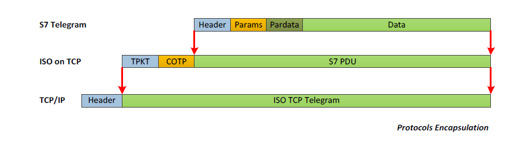
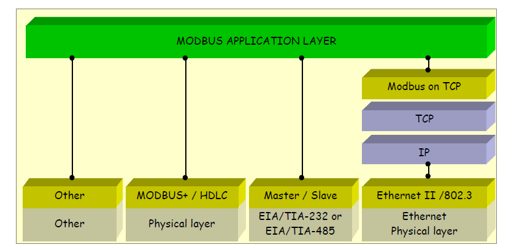
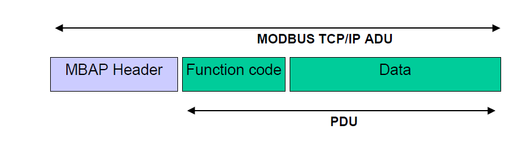

3 系统原理
3.1 S7协议
为了配置、监控、数据交换的方便，PLC都具有多种通信功能。S7-300/400系列PLC集成了MPI接口、PROFIBUS-DP通信模块、工业以太网通信模块以及点对点通信模块。其中，以太网模块能够连接到互联网进行远程管理，它使用的S7协议是我们制造蜜罐所需要实现的重点。
S7协议是西门子公司的专利通信协议，用于西门子S7-300/400系列PLC。在ISO的7层网络模型中，S7协议占据了会话层、应用层和表示层，传输层是TCP的变种——ISO on TCP（RFC 1006），其余与以太网相同。它的功能包括PLC编程、数据交换、故障诊断等。
| Layer index | OSI layer | Protocol |
|---|---|---|
| 7 | Application Layer | S7 communication |
| 6 | Presentation Layer | S7 communication |
| 5 | Session Layer | S7 communication |
| 4 | Transport Layer | ISO-on-TCP (RFC 1006) |
| 3 | Network Layer | IP |
| 2 | Data Link Layer | Ethernet |
| 1 | Physical Layer | Ethernet |
表1 S7协议栈

图1 S7协议封装
Snap7可以使用S7协议扮演Client、Server、Partner三种角色，在制造蜜罐时，主要用到的是Server。Snap7 Server模拟了西门子PLC中通讯处理器（CP）的功能，接受来自Client（PLC编程软件、PLC扫描器、HMI设备、SCADA系统）的连接并应答请求。
Snap7 Server面向客户端提供以下功能：
- 协商PDU：建立会话时一般会设定所传输的S7报文的最大长度。如果需要传输的内容超过最大长度，就会分多次传输；
- PLC控制：包括CPU冷启动、CPU暖启动、CPU停止运行、内存清理、将RAM拷贝至ROM等功能；
- 时钟：读写PLC自带的时钟；
- 安全：设定和清除会话密码；
- 读取系统状态：系统状态包括相当多的内容，如硬件的型号、配置、工作状态等。PLC扫描器最常访问的是系统状态子表0x0011的设备序列号和0x001C的组件标识记录（包括CPU型号、生产商、设备名称等）。
- 读写数据：以不同的数据类型（位、字节、字、双字、浮点型、日期、计数器、计时器）读写各存储区域（输入映像区、输出寄存器、位寄存器、计数器、计时器、数据块）；
- 读取块信息：获取块列表、枚举块、获取块信息，目前支持的块包括组织块（OB）、数据块（DB）、功能块（FB）、功能（FC）、系统数据块（SDB）；
- 上传下载块：读写上述几种块的内容，一般用于PLC编程。
Snap7 Server封装的API提供以下功能：
- 管理功能：创建/销毁服务器、启动/停止服务器、读写服务器参数；
- 存储区功能：注册/注销存储区、锁定/解锁存储区；
- 控制流功能：注册事件回调函数、注册读写回调函数、设定事件掩码、从事件队列中读取事件、清空事件队列；
- 其他功能：获取工作完成情况、获取CPU状态、将事件转换为文本、将API调用的错误码转换为文本。
3.2 Modbus协议
S7-300系列PLC通过安装CP443-1模块，或者使用BCNet-S7转接器，还可以进行Modbus通信。Modbus是1979年Modicon公司开发的用于智能设备之间进行主从方式通信的一种协议。通过此协议，控制器相互之间以及经由网络和其他设备之间可相互通信。它已经成为了一种通用工业标准，用于将不同厂商生产的控制设备连成工业网络。
Modbus在ISO的7层网络模型中位于第7层，下面的层有多种不同的配置，在本蜜罐系统中，下层协议为以太网和TCP/IP。

图2 Modbus协议栈

图3 Modbus协议封装
Snap7完全没有实现Modbus协议，但它的两个抽象基类——TMsgSocket和TCustomMsgServer为实现Modbus协议提供了方便。另外，Snap7现有的结构不适合于两种协议共同访问存储区，因此对Snap7的结构做了一些调整，将原先嵌入在S7服务器中的PLC的存储区域独立出来。
两种协议对于存储区的命名有所不同，因此查阅资料找到它们之间的对应关系也是一项重要的工作，比如S7称之为过程输入映像区的存储区，Modbus称之为输入寄存器，S7称之为过程输出寄存器的存储区，Modbus称之为线圈。
Modbus Server面向客户端提供以下功能（括号内为功能码）：
- 读多个线圈（0x01）；
- 读离散输入（0x02）；
- 读保持寄存器（0x03）；
- 读输入寄存器（0x04）；
- 写单个线圈（0x05）；
- 写单个寄存器（0x06）；
- 写多个线圈（0x0F）；
- 写多个寄存器（0x10）；
- 读设备信息（0x2B）。
3.3 NpCap抓包
NpCap是一个在操作系统网络协议栈中抓包的工具，由一个软件API库和一个网络驱动程序组成。它广泛用于网络协议分析、网络监控、流量生成、用户层网桥和路由器、网络入侵检测（包括端口扫描检测）和网络扫描。
NpCap的基本功能包括枚举网络接口、轮询抓包、回调抓包、设定包过滤器等。
3.4 数据库的使用
MySQL数据库支持标准的SQL语句。
首先创建本系统所使用的honeypot数据库。
然后创建管理员、蜜罐主机、后台监控三个用户并为他们设置权限。其中管理员拥有全部权限，蜜罐主机和后台监控没有创建数据库和数据表的权限，其中蜜罐主机还没有删除数据的权限，因此只能写入数据。
最后创建事件记录（虽然名称是s7_events，但包括S7事件和Modbus事件）、包捕获、端口扫描统计三个数据表。